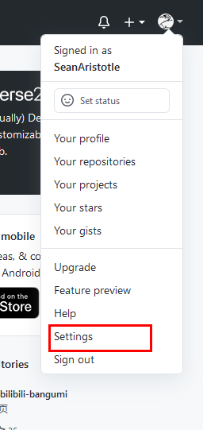
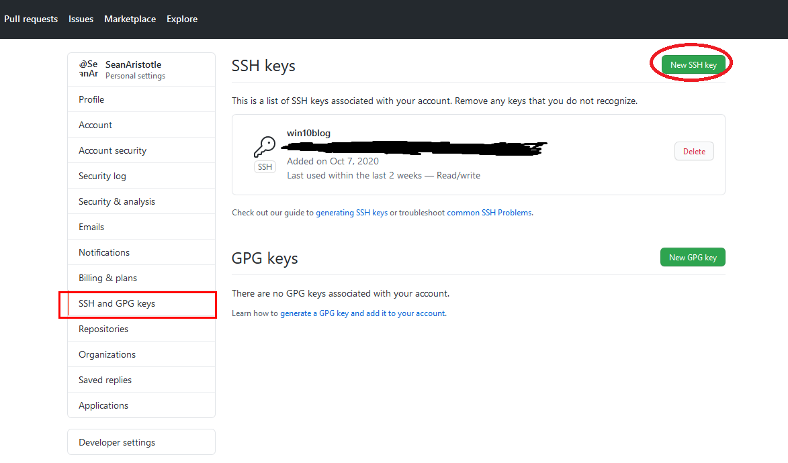

使用Hexo和github搭建个人博客
一、准备工作
1.github账号
2.git for Windows
3.node.js
4.npm
Github账号
Github 仓库是你博客存储的地方，是构建博客的起点，点击这里去官网注册一个就好了。
Git for windows
Git for Windows是用来将你的博客生成并部署到github上，当然在其他步骤中它的作用也不可或缺。但是Git for Windows. 国内直接从官网下载比较困难，需要翻墙。这里提供一个国内的下载站，方便网友下载。
node.js和npm
官网下载适合你的node.js，推荐下载.msi文件，因为.msi文件可以自动帮你配置环境变量，省时方便，何乐而不为呢（但是这里要注意以管理员身份运行，不然会因没有权限更改环境变量而出现the error code is 2502，the error code is 2503）点这里学会如何以管理员身份运行.msi文件。最新版的node.js已经集成了npm，所以不需要额外安装npm。安装完成后可以运行Git Bush，在其中输入：
1 | node -v |
出现相应版本号即安装成功。
为了能有一个更好的下载体验，建议将将npm的注册表源设置为国内的镜像。
1 | #获得原来的镜像地址 |
二、创建GitHub博客仓库
1.创建仓库
2.配置SSH key
创建仓库
这一步登录你的github后，创建一个与你github重名的仓库，这里注意，此处只能创建与你github用户名一样的用户名，比如我的github用户名是SeanAristotle，那我的仓库名一定要是这个，等后续工作完成后，只需要打开: https://seanaristotle.github.io 就可以看到我的博客了。创建仓库需要一定的时间，大约需要半个小时，耐心等待即可。
配置SSH Key
首先，先确定你是否有SSH Key，打开你的用户根目录，看看是否有.ssh这个文件夹，文件夹下是否有id_rsa和id_rsa.pub这两个文件。

如果没有，就需要打开刚刚装好的Git Bush，输入下面的代码来创建(xxxx部分就是你的邮件地址)
1 | ssh-keygen -t rsa -C "xxxx@xxx.com" |
然后，将SSH Key加到你的github中就可以了。
打开settings，
然后新建SSH keys ，填入pub公钥就OK了。
三、安装并使用Hexo
1.安装Hexo
2.初始化
3.部署到GitHub
4.大功告成，写博客
安装Hexo
这步so easy，打开你的Git Bush 输入：
1 | npm install -g hexo |
OK，这一步基本完成，如果出现： command not found: hexo可以参考这里
初始化
在电脑中选择一部分空间作为你博客的存储空间，然后打开Git Bush，进入这个目录，（如，我的文件目录是D:/Git/blog）
1 | # 进入目录 |
部署到GitHub
首先，到你的博客根目录中的_config.yml文件中，修改deploy部分
1 | deploy: |
这里好像有点问题，但是不确定，等出现有人问问题再填坑吧！
然后打开Git Bush，安装插件
1 | npm install hexo-deployer-git |
最后只要使用下面命令部署到github上就OK了。
1 | hexo d |
大功告成，写博客
这下，你就可以开始写博客了，初始化时生成了个hello Hexo，里面有快捷指令的用法，然后就可以写博客了。
其实，只要记住三个命令就可以基本操作了：
1 | #创建新博客 |
推荐一下我的Markdown编辑器[Tpora](Typora 官方中文站 (typoraio.cn)),感觉超级好用。
四、总结
关于主题，不建议不懂前端没有网页基础的人上来就搞，有这个时间多写两篇博客它不香吗？
希望自己有时间多写写，不管干什么，多学习，多总结总会有收获的。
p.s.推荐一款好看的主题，从头到尾都有教程，省心又好看！！！